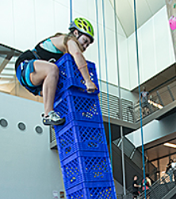
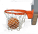

 Crate Climbing (2021-2022)
A new academic year brought with it a new and exciting PEK Event – Crate Climbing. On October 24 this year, a grand tournament of courage and team work saw the presence of almost the entire Student Residence body. The rules are simple: a team of 7 people (6 supporters and 1 climber) must build and climb the highest possible tower using crates in under 10 minutes. Each of the hall teams had to attend 2 training session before the actual competition. The Student Residence Office had reserved an entire stadium in Mongkok for the event. As the teams entered the stadium they felt nothing short of Olympic athletes who have come to represent their nations(halls). There was a chill in the air as the announcer read out the rules for the competition and as each of the teams planned out their winning strategies and the audience members waited with baited breaths. As the rounds started the audience erupted, each hall with their own unique chants. The Hall 9 cheering team displayed intense enthusiasm and presence as they cheered on the Wuddies Team. The Hall 9 team used a very effective strategy to climb multiple crates at once – ‘The Stairs Technique’. Instead of climbing one at a time, they made stairs using all the crates, stacked as 8-6-4-2, and then walked up to start ahead of the other teams. The stadium atmosphere had such intense energy and chanting that every single participant, while nervous, was surely running at 120% capacity. And even though only 3 teams went home with prizes, each team was left refreshed and imbued with a competitive spirit that they will display next year as well.
Table Tennis (2021-2022)
Do you like to play table tennis? Your fellow friends Wuddies definitely like. On November 13, from 4:30 pm to 9:30 pm, a grandiose event took place in the multifunctional hall A and C - the PEK Table Tennis competition. The team of our hall, consisting of 10 residents and a team manager, brought the first and not the last victory of this academic year. Our team was carefully selected; day and night they trained at MFH C to proudly present our name on competition. In the first round we played against hall 7 - we got to the semi-finals where we played with hall 8 and finally faced the hall 3 team to become champions. In addition to the competition participants, other wuddies were great at keeping the team spirit alive with applause, lumps and whistles. Those who could not enjoy the game offline were given an excellent opportunity to watch their friends on the zoom. Each member of our hall team showed mastery playing on individual battles, however distinguishing factor was great teamwork: respect, effective communication and speaking openly about progress or mistakes during trials helped to boost results. After the victory, our team captured joyful moment on cameras and a proceeded with hearty dinner.
Athletic (2021-2022)


In the Athletic competition the halls compete in Men's 4X100m Relay and Women's 4X100m Relay.
The CityU Annual Athletic Meet was held on October 17th. The aim of these event is popularization healthy lifestyle amongst the students. With a spirit of rivalry, 11 halls compete to find out who is the best this year.
Our hall formed a team consisting of 13 sports enthusiasts to participate in the 4x100 meter relay race. To show their best, they had two training sessions. The managers of our team were our beloved Residence Tutors, Shoaib and Alisher. Thanks to them for being a part of the organization process!
After the preparation, Wuddies were ready to represent Hall 9. First to compete was our female team. The girls did great and could achieve 72 seconds result, but unfortunately, there were worthy opponents, so they couldn’t finish in top 3. Thanks to them for showing their best!
Afterwards, our male team were set on track. They ran the distance in astonishing 51.8 seconds! And after two rounds our team was second. But in the third round two teams showed a result better than ours, and unluckily, we got the 4th place overall.
Although our team didn’t get the prize, they still did a great job competing others. Overall, the meeting was successful for our hall.
Athletic (2018-2019)


In the Athletic competition the halls compete in Men's 4X100m Relay and Women's 4X100m Relay.
The competition is part of CityU Annual Athletic Meet (Inter-hall Athletic Competition) and is held at Joint Sports Centre.
In this autumn afternoon, the sky is clear and the sunshine is warm. Tree leaves fly and dance next to the running track.
 Soccer (2018-2019)
Soccer (2018-2019)
Thanks for all our team members and your support!
Table Tennis (2018-2019)
Tough matches make awards meaningful~
 Basketball (2018-2019)

Tennis (2018-2019)


The annual PEK tennis competition started at 25 th Feb, and in the round stage, our hall 9 players faced the challenges from hall 2 and hall 8. Though our athletes didn’t perform perfectly, we are fortunate to win the several games and enter into knock out stage, and thanks to the effort from all the players, many beautiful and exciting games were shown to us.
Singing Contest (2018-2019)


PEK Inter-hall Singing Contest is an annual festival for all residents. It has now become a tradition for CityU Residence. It is no doubt that Singing Contest will be considered as one of the most precious memories in university life for all. Looking forward to the outstanding performances next year!